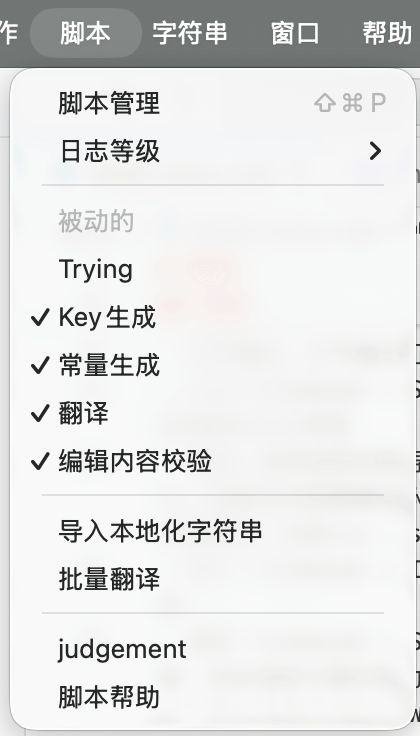
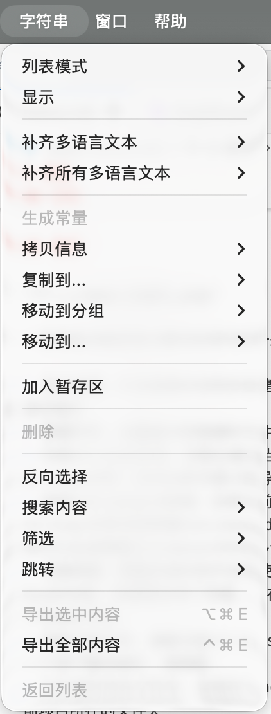

TransX 提供了丰富的菜单系统和快捷键支持，让您能够通过键盘快速执行各种操作，无需频繁使用鼠标。熟练掌握这些快捷键可以显著提升工作效率。本文档详细介绍应用程序菜单栏中的各个菜单项及其对应的快捷键。
应用程序主菜单，包含全局级别的应用管理功能。这是 macOS 标准应用菜单的位置，在 Windows 和 Linux 系统中，这些选项通常会整合到其他菜单中。
显示应用程序的基本信息，包括：
这个对话框也是验证您使用的 TransX 版本的主要途径，在报告问题或寻求技术支持时，版本信息是重要的参考。
打开偏好设置窗口，用于配置 TransX 的全局行为和外观。详细配置选项请参考 偏好设置 文档。
快捷键 Command + ,（逗号）是 macOS
应用程序的标准偏好设置快捷键，符合系统级交互惯例。
隐藏 TransX 窗口，但应用程序继续在后台运行。这是 macOS 标准的窗口管理功能，用于快速清理桌面空间而不关闭应用程序。
隐藏除 TransX
之外的所有其他应用程序窗口，让您专注于本地化工作。快捷键为
Option + Command + H。
显示所有之前隐藏的应用程序窗口，恢复完整的工作环境。
完全退出应用程序。TransX 会在退出前保存所有未保存的项目配置，并询问是否保存正在编辑的内容。

文件菜单包含项目和文件管理相关的核心操作，是日常使用频率最高的菜单之一。这里集中了从创建新项目到导入导出数据的完整文件操作流程。
在当前 .strings
文件中创建一个新的本地化条目。执行此命令后，会在主窗口启动编辑区，您可以立即输入新的键值对。
使用场景：
快捷键 Command + N 遵循"New"的通用约定。
启动新建项目向导，创建一个全新的 TransX 项目。会引导您完成项目选择、参数配置、常量设置等初始化步骤。详见 新建项目。
快捷键 Shift + Command + N 是"New
Project"的标准快捷键，在很多 IDE 中都采用此约定。
打开一个已存在的 TransX 项目。会弹出文件选择器，您可以浏览并选择之前创建的项目配置文件。
支持的操作：
快捷键 Command + O 是"Open"的通用约定。
快速访问最近打开过的项目列表。TransX 会记录最近访问的项目及其打开时间，让您能够快速切换工作项目。
功能特点：
这个功能对于需要在多个项目间频繁切换的开发者特别有用。
返回到应用程序启动时的入口页面。入口页面提供了三个选项：
这个功能允许您在不关闭当前项目的情况下快速切换到项目选择界面，方便多项目管理。
快捷键 Shift + Command + O 可以理解为"Open Entry"。
将当前项目的本地化内容导出为外部格式。TransX 支持多种导出目标：
导出到项目（必要操作）：
.strings 文件导出到外部格式：
重要提示：每次编辑完本地化内容后，必须执行"导出到项目"，否则您的修改只存在于
TransX 的内部数据库中，不会写入实际的 .strings 文件，Xcode
构建时看不到这些修改。
从外部文件导入本地化内容到当前项目。TransX 支持导入：
CSV 格式：
JSON 格式：
导入策略：
典型使用场景：
快捷键 Command + I 代表"Import"。
保存当前项目的配置变更。注意，这里保存的是：
不包括本地化文案的实际内容。文案内容需要通过"导出到项目"来持久化。
快捷键 Command + S 是最常用的"Save"快捷键。
设计说明：将配置保存和内容导出分离的设计是为了：
关闭当前窗口。如果有未保存的配置或未导出的内容修改，TransX 会弹出提示询问是否保存。
快捷键 Command + W 是"Close Window"的标准快捷键。

操作菜单汇集了 TransX 的高级功能和批量处理工具，以及分散在应用各处的重要功能的集中入口。这些操作通常涉及整个项目级别的处理，需要一定的时间来执行。
切换"同步创建"模式的显示状态。同步创建是一个便捷功能，用于在编辑某个语言的内容时，自动在其他语言中创建相同键的空白条目。
工作原理：
.strings
文件中创建相同的键值、常量等使用场景：
界面影响： 此菜单项控制主窗口编辑区是否显示同步创建的相关控件和提示。
管理哪些 .strings
文件在导航区中显示或隐藏。打开此选项会显示一个文件列表，您可以：
典型应用：
.strings 文件这个功能不影响文件的实际存在，只影响 TransX 界面中的可见性。
在主窗口中快速切换当前管理的 .strings
文件。虽然可以通过导航区点击切换，但这个菜单提供了一个快捷列表，显示：
.strings 文件快捷键提示： 很多开发者会为常用的几个文件设置自定义快捷键，通过快捷键直接跳转。
针对 Interface Builder（Storyboard/XIB）自动生成的
.strings 文件的特殊功能。
背景知识： 当 Xcode 项目中有 Storyboard 或 XIB
文件启用了本地化，Xcode 会自动生成对应的 .strings
文件。这些文件的内容与 Storyboard 中的视图元素强相关，包含 Object ID
和控件类型等信息。
功能说明： 此操作会：
.strings 文件中的所有条目使用时机：
可用性： 此菜单项仅在当前选中的
.strings 文件对应于 Storyboard 或 XIB
时才启用（不灰置）。
自动化工具，用于修复代码中直接使用字符串键值的地方，将其替换为对应的常量引用。
前提条件：
NSLocalizedString、LL() 等）工作流程：
NSLocalizedString("key", comment: "")）NSLocalizedString(lMyKey, comment: "")）示例：
修复前：
let title = NSLocalizedString("com.app.settings.title", comment: "")
let message = LL("com.app.error.network")修复后：
let title = NSLocalizedString(lSettingsTitle, comment: "")
let message = LL(lErrorNetwork)价值： 这个功能对于将旧项目迁移到常量模式特别有用，可以自动完成大量重复性的代码修改工作。
删除当前在主窗口中选中的 .strings 文件。
⚠️ 高危操作警告： 此操作会：
执行流程：
使用场景：
最佳实践：
在系统文件管理器（Finder/资源管理器）中打开当前项目的根目录。
便利性：
清空主窗口日志区的所有日志记录。这是一个纯粹的 UI 操作，不影响：
使用场景：
日志清除后，后续的操作仍会继续记录。
打开当前项目的配置窗口，等同于通过菜单栏或快捷键访问项目配置。详见 项目配置。
这个菜单项提供了一个便捷的入口，特别是在主窗口工作时快速调整项目设置。
重新扫描项目目录，刷新 .strings 文件列表。
触发重新扫描的场景：
.strings 文件.strings 文件扫描过程：
.strings 文件注意事项：

TransX 提供了灵活的脚本扩展机制，允许开发者使用 JavaScript 编写自定义脚本来扩展应用的功能。脚本系统为高级用户提供了自动化和定制化的能力，可以实现批量处理、数据转换、自定义导出等功能。
TransX 的脚本系统基于 JavaScript（ES6+），选择 JavaScript 的原因包括：
通过 TransX 提供的 API，脚本可以：
TransX 团队在 GitHub 上维护了一个官方脚本仓库，包含：
仓库地址：https://github.com/JyHu/X/tree/main/Scripts
仓库中包含的示例脚本类型：
批量处理脚本
数据转换脚本
导出脚本
分析脚本
集成脚本
沙盒环境： TransX 在受限的沙盒环境中执行脚本，脚本：
权限管理： 某些脚本可能需要特殊权限（如网络访问），TransX 会在首次运行时请求用户授权。
一个简单的脚本示例，将所有键名转换为小写：
// 获取当前选中的 .strings 文件
const file = transx.getCurrentFile();
// 遍历所有条目
file.entries.forEach(entry => {
// 将键名转换为小写
entry.key = entry.key.toLowerCase();
});
// 保存修改
file.save();
// 输出日志
transx.log(`已处理 ${file.entries.length} 个条目`);"脚本"菜单会动态显示：
通过脚本系统，TransX 的功能可以无限扩展，满足各种复杂和定制化的本地化管理需求。

字符串菜单提供了针对本地化条目的各种操作，这些操作与主窗口内容区的右键上下文菜单功能相同。菜单中的命令主要响应当前激活窗口（前台窗口）内容区中选中的条目。
字符串菜单的设计遵循了以下原则：
字符串菜单的快捷键设计考虑了：
字符串菜单会根据当前状态动态调整：
未选中任何条目时：
选中单个条目时：
选中多个条目时：
只读文件或锁定条目：
字符串菜单与内容区的右键上下文菜单完全同步：
两者的区别仅在于访问方式：
除了上述主要菜单外，TransX 还包含以下标准系统菜单：
提供标准的文本编辑操作：
控制界面显示：
窗口管理操作：
获取帮助和支持。
通过熟悉和掌握 TransX 的菜单系统，您可以高效地使用键盘完成大部分操作，显著提升本地化管理工作的效率。建议新用户首先熟悉文件、操作和字符串这三个核心菜单，它们涵盖了日常工作的绝大部分需求。